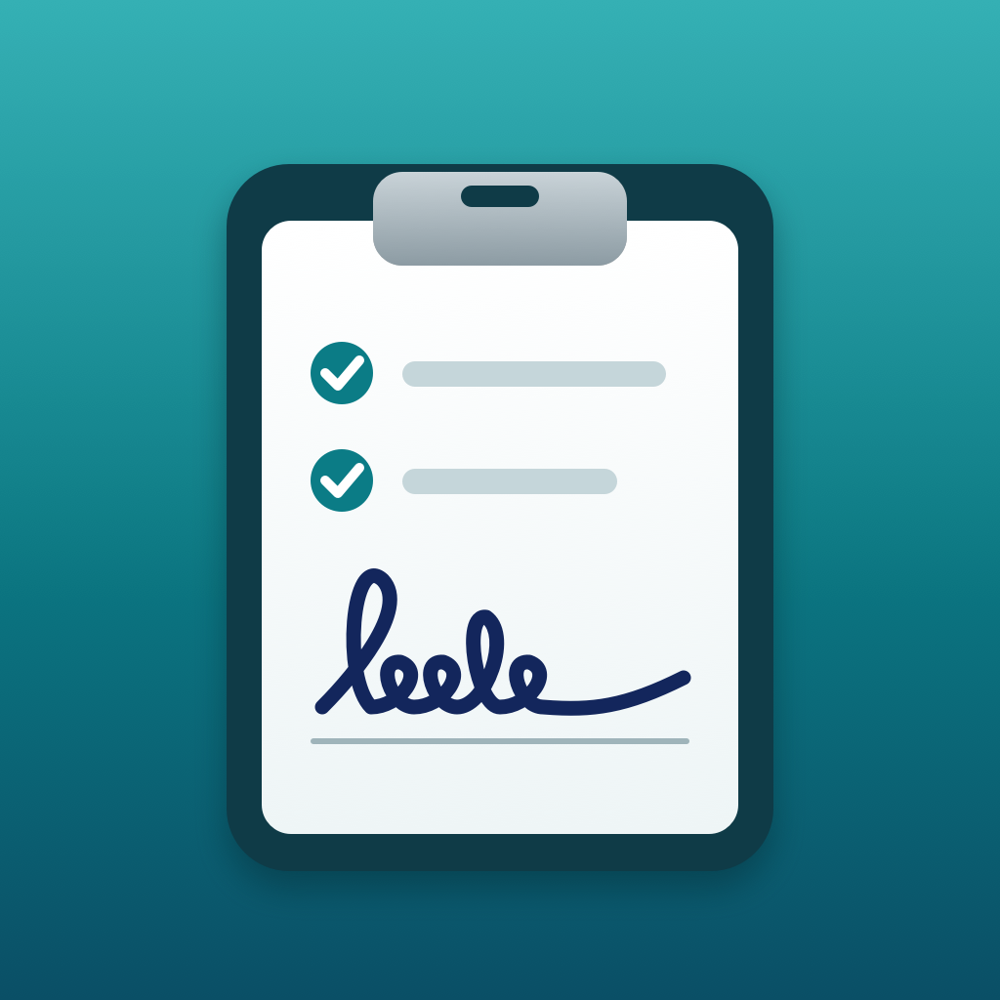

Front Desk Sign InPrivacy Policy
No accounts, ads, analytics or tracking, and nothing is sent to us.
This policy explains how Front Desk Sign In (“the app”), a visitor and staff sign-in kiosk for iPad and iPhone, developed by Kevin Fitzgerald, handles information.
Information we collect
None. Front Desk Sign In does not collect, store, sell or share personal information on any server, and it does not include analytics, advertising, crash-reporting or tracking tools of any kind.
Information stored on the front desk’s iPad or iPhone
To work, the app keeps the following on the front desk’s iPad or iPhone only:
- The visitor log: for each sign-in, the person’s name, whether they’re a visitor or staff, the time they signed in and out and how (at the kiosk, by the front desk, or automatically at midnight), and, if the sign-in form asks for them, their company, who they came to see and their signature, saved as an image
- The organization’s settings: its name, what the sign-in form asks, the people and departments visitors can pick, its own privacy notice if it wrote one, how long entries are kept, the paper size and the kiosk options
- Files the front desk prints or exports (the fire-drill sheet and, with Pro, the PDF or CSV log), made in the app’s temporary folder while they’re printed or shared. They are deleted the next time the app opens or makes another file
It stays in Front Desk Sign In’s own storage on that device and is never sent to us. The visitor log is kept in a file that’s locked whenever the device is locked. The device’s own backup (iCloud Backup or a computer, if the organization turns one on) includes it, as it does for other apps; that backup belongs to the device owner’s Apple Account, and we can’t see it. Entries are removed when the front desk deletes them, automatically after the time the organization sets (with Pro), or when the app is deleted.
The visitor log belongs to the organization
Front Desk Sign In is used by a business or organization, such as an office, school, church or club, to keep its own sign-in log at its front desk. The names, signatures and other details that visitors and staff enter are kept by that organization on its own iPad or iPhone, and the organization decides what the form asks, how long entries are kept and what it does with them. We, the app’s developer, never receive, see or have access to any of it: the app has no server and no account, and it sends nothing over the internet. If you signed in as a visitor and have a question about your entry, or want it deleted, ask the organization where you signed in. We can’t see, change or delete it.
What visitors are told
A short notice on the welcome and sign-in screens says what is kept, that it’s kept on that device, for how long, and that the app doesn’t send it anywhere. The organization can replace it with its own words, for example to point to its own privacy policy.
Who can see the log
The log, the fire-drill sheet and exports are in an admin area that opens only with Face ID, Touch ID or the device’s passcode, and it locks itself after a few minutes untouched or when the app leaves the screen. To sign out at the kiosk, a visitor types at least two letters of their name and sees only matching names and their sign-in times, so visitors can’t browse who else is there or why. The name boxes don’t suggest names that earlier visitors typed. Face ID and Touch ID are handled by iOS and iPadOS: the app only learns whether the check passed and never receives face or fingerprint data.
Deleting entries
The front desk can delete one entry, or every entry, at any time in the admin area. With Pro, the organization can also choose to have entries deleted automatically after 7 days, 30 days, 90 days, 1 year or 2 years, signatures included; people still signed in are not deleted until they sign out. Deleting the app deletes the whole log.
Printing and sharing
The fire-drill sheet and, with Pro, the visitor log as a PDF or CSV are made on the device only when the front desk asks for them. They go only where the front desk sends them, such as an AirPrint printer, the Files app or an email it writes, and that printer’s or service’s own terms then apply. The app doesn’t email or text anyone by itself.
Purchases
Front Desk Sign In is sold through Apple’s App Store. Apple handles payment; we never see your payment details.
Children’s privacy
Because the app collects no personal information from anyone, it does not knowingly collect personal information from children.
Changes to this policy
If this policy changes, the new version will be posted on this page with a new effective date. If the app ever begins collecting data, this policy will be updated before that happens.
Contact
Questions about this policy or the app: k.fitzgerald310@gmail.com.